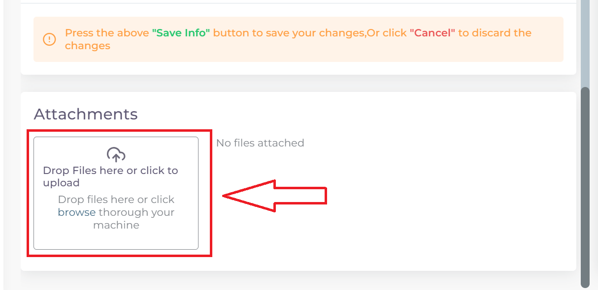
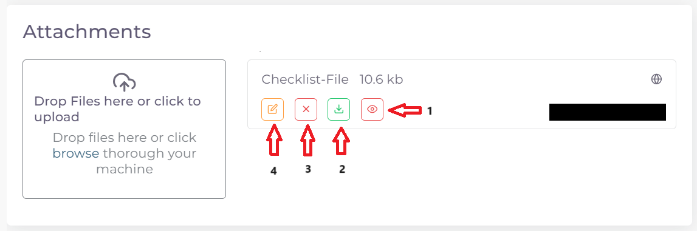

خطوات تقديم معاملة تسجيل موقع تصنيعي لشركة مكملات غذائية او أدوية نباتية او حليب طبي SHMR
اولا: بدء معاملة جديدة واختيار نوع المعاملة:
من واجهه الحساب الرئيسية نضغط على زر new لغرض بدء معاملة جديدة:

ثم نختار نوع المعاملات المختصة بالمواقع التصنيعية:

ثم نختار نوع المعاملة وهي تسجيل موقع تصنيعي جديد:

ثم نختار تخصص الموقع التصنيعي وهوة تسجيل موقع تصنيعي لشركة مكملات غذائيةاو ادوية نباتية او حليب طبي:
ثانيا: ملئ المعلومات الاساسية للموقع التصنيعي وبدء المعاملة:
ملاحظة
اي حقل عليه علامة * هوة حقل اجباري ويجب ملئه للتقدم في المعاملة
واي حقل لا يحوي هذه العلامة او يحوي على كلمة Optional فهوة حقل اختياري يمكن تركه او ملئه ولا يوثر على التقدم في المعاملة
اختيار وقت تدقيق المعاملة حسب اوقات الدوام الرسمي في الوزارة:

ملاحظة
الشفت المسائي: يكون وقت تدقيق المعاملة من ال 8 صباحا الى ال 5 مسائا
الشفت الصباحي: يكون وقت تدقيق المعاملة من 8 صباحا الى ال 2 مسائا
الشفت المسائي يكون اسرع لان وقت التدقيق اليومي اكثر
تكلفة التسجيل للشفت المسائي تكون اكثر من الصباحي
ثم نكتب اسم الموقع التصنيعي:

ملاحظة
حقل ال Name يكتب به اسم الموقع التصنيعي الموجود في الوثائق
اما حقل ال Arabic Name يكتب به اللفظ العربي للاسم
مثلا: اذا كان اسم الشركة في الوثائق هوة astrazeneca فيكتب في حقل ال Name
اما في حقل ال Arabic Name فنكتب استرازنيكا وحسب اللفظ العربي الصحيح
اختيار تخصص الموقع التصنيعي:

اسم الشخص المالك للموقع:

ملاحظة
اذا لم تتوفر هذة المعلومة في ملفات الموقع فيكتب NA في الحقل
ملئ معلومات عنوان الموقع ومعلومات التواصل وسنة التأسيس للموقع التصنيعي:

تحذير
اختيار الدولة سيوثر مستقبلا على وجود احد المتطلبات Cheacklist وهية رسالة الدعوة INVT
في حالة اختيار دولة من الفئة A لا يطلب ملف الزيارة
اما في حالة دولة من الفئة B او OTHER فيتم طلب ملف الزيارة
اختيار طبيعة الموقع التصنيعي

ملاحظة
طبيعة الموقع اذا كان هوة:
المصنع للمنتج Manfacture
كلاهما Manfacture and Contract manfacture
ثم نعود الى بداية الصفحة ونضغط على Create لغرض بدء المعاملة:

فيتم بدء المعاملة كما موضح ادناه:

ثالثا: ملئ قوائم متطلبات المعاملة Cheacklist:
بعد بدء المعاملة نرى قسم قوائم المتطلبات Cheacklist على اليمين قد فتح الدخول له

ملاحظة
لكل معاملة عدد محدد من قوائم المتطلبات Cheacklist التي يجب ملئها جميعا قبل ارسال المعاملة
وفي حالة معاملة تسجيل موقع تصنيعي لشركة مكملات غذائية او ادوية نباتية عدد القوائم Cheacklist المطلوبة في المعاملة هي 8:

ويمكن ملاحظة حالة اي Checklist من خلال الركن العلوي الايمن:

وتكون الحالة Empty اي لم يتم ملئ القائمة بعد.
ملاحظة
وتشمل ال cheacklist في حالة معاملة تسجيل موقع تصنيعي دوائي:
رسالة التخويل AL:
استمارة التسجيل APDX3:

شهادة التصنيع الجيد GMP:
شهادة التأسيس COI:

ملف الشركة الرئيسي SMF:

ملف المقاطعة BWI:
شهادة البيع الحر او شهادة المستحضر FCS:

رسالة الزيارة INVT:

تحذير
قبل البدء بملئ اي Cheacklist يجب مراعاة ما يلي:
ملئ الحقول المطلوبة ان وجدت
يجب رفع الملف الخاص في ال Cheacklist بصيغة pdf
ان يكون الملف المقدم يحوي فقط اوراق الملف المخصصة لل Cheacklist
كيفية ملئ الحقول ورفع الملفات لل Cheacklist وطريقة حفظ التقدم:
نضغط على احد القوائم للبدء وتظهر صفحة القائمة :

ملاحظة
يمكننا معرفة ال Cheacklist الحالية من خلال
اسم ال Cheaklist:

او من خلال لون الحد الخارجي للقائمة على اليمين:
نقوم بملئ الحقول المطلوبة ان وجدت:
ثم نقوم بحفظ معلومات الحقول بعد ملئ كل الحقول المطلوبة عن طريق الضغط على زر Save Info:
ملاحظة
في حالة حدوث خطأ في ادخال المعلومات وتم حفظ التقدم فيمكن التعديل على الحقول عن طريق الضغط على Edit:

ثم تغيير الحقول المطلوبة والضغط على Save Info لحفظ التغييرات الجديدة او الضغط على Cancel لتجاهل التغييرات

والان نقوم برفع الملف الخاص بهذة القائمة عن طريق النزول لقسم Attachments في اخر الصفحة :

نقوم بالضغط على ايقونة الرفع واختيار ملف للرفع:
ويضهر الملف بعد رفعه كما موضح ادناه:

ملاحظة
في حالة رغبتك بالتاكد من الملف فيمكنك عرض الملف المرفوع عن طريق الضغط على الايقونة رقم 1.
واذا اردت تنزيل الملف نضغط على الايقونة رقم 2 .
واذا اردت حذف الملف فنضغط على الايقونة رقم 3 .
واذا اردت اضافة ملاحظة حول الملف نضغط الايقونة رقم 4 :
بعد رفع الملف وملئ الحقول ان وجدت نعود الى بداية الصفحة ونضغط على save لغرض حفظ ال cheacklist :

ملاحظة
بعد حفظ تقدم ال cheacklist نلاحظ تغيير حالة ال cheacklist الى Draft وتعني ان القائمة تم ملئ حقولها وتم رفع الملف ايضا, ونلاحظ ايضا زيادة موشر ال cheacklist بمقدار 1 وتعني انه تم ملئ ال cheacklist وحفظ التقدم بنجاح :
نقوم بملئ كل ال Cheacklist باستخدام نفس الطريقة
بعد ملئ كافة ال Cheacklist وتحول حاتهم الى Draft يمكننا ملاحظة عدد ال Cheacklist التي تم ملئهى قد اكتمل:

بعد تدقيق المعلومات والملفات المرفوعة يمكن الان ارسال المعاملة الى الجهات المختصة لمراجعتها:
تحذير
لا يمكن تعديل اي حقول او ملفات بعد ارسال المعاملة لذلك يرجى التاكد جيدا قبل الارسال. وفي حال حدوث اي خطأ يرجى التواصل مع قسم الدعم الفني لتلقي المساعدة اللازمة
نضغط على زر Submit في واجهه المعاملة الرئيسية لغرض ارسال المعاملة:

تحذير
في حالة وجود خطأ في اختيار نوع المعاملة او شيئ مشابه يمكن اهمال المعاملة الحالية عن طريق الضغط على زر Neglect:

ملاحظة
للانتقال من واجهه ال احد ال Cheacklist الى واجهه المعاملة الرئيسية نضغط على زر ال Back:

لتاكيد عملية الارسال نرى حالة المعاملة الرئيسية وحالة كل Cheaklist قد تحولت الى Submitted اي تم الارسال بنجاح:

بعد الانتهاء من الارسال يجب مراجعة شعبة العلاقات في وزارة الصحة مع جلب الملفات المصدقة والاصلية المطلوبة حسب تعليمات الوزارة وايضا لدفع فاتورة الاستمارة الالكترونية.